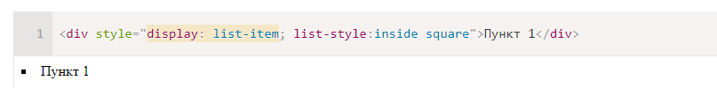
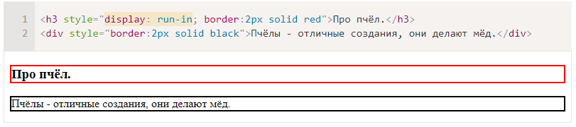
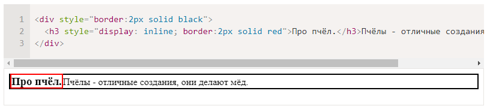

Значения list-item, run-in и flex
У свойства display есть и другие значения. Они используются реже, поэтому посмотрим на них кратко:
list-item
Этот display по умолчанию используется для элементов списка. Он добавляет к блоку с содержимым ещё и блок с номером(значком) списка, который стилизуется стандартными списочными свойствами:

run-in
Если после run-in идёт block, то run-in становится его первым инлайн-элементом, то есть отображается в начале block.
Если ваш браузер поддерживает это значение, то в примере ниже h3, благодаря display:run-in, окажется визуально внутри div:

Если же вы видите две строки, то ваш браузер НЕ поддерживает run-in.
Вот, для примера, правильный вариант отображения run-in, оформленный другим кодом:

Если этот вариант отличается от того, что вы видите выше – ваш браузер не поддерживает run-in. На момент написания этой статьи только IE поддерживал display:run-in.
flex-box
Flexbox позволяет удобно управлять дочерними и родительскими элементами на странице, располагая их в необходимом порядке.